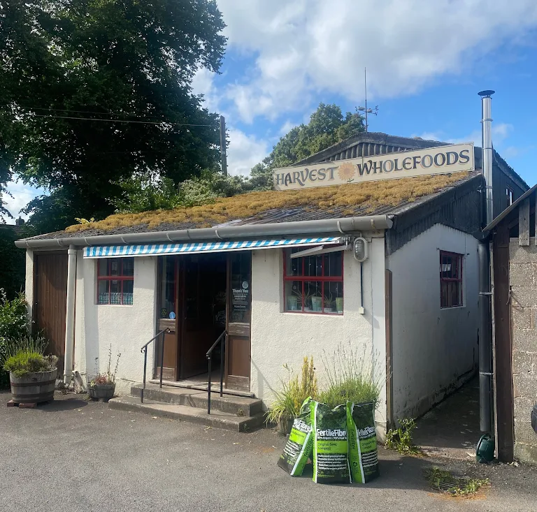
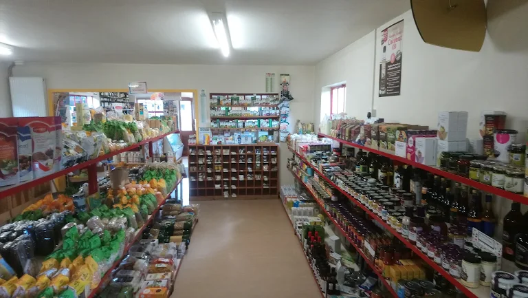
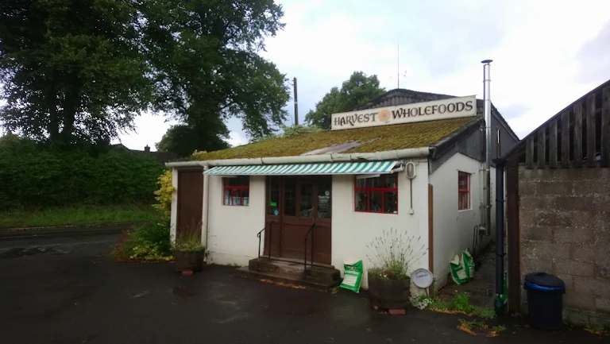
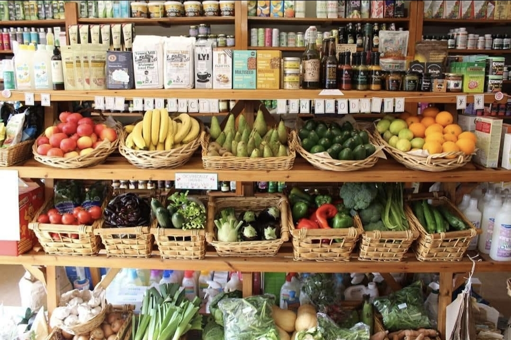

Lydham, Shropshire · Est. 1980s
Organic produce, wholefoods, and natural living essentials — tucked into the South Shropshire hills.
Visit UsHarvest Wholefoods has been a quiet cornerstone of South Shropshire since the 1980s — one of those rare shops that feels like it has always been there, because for many people, it has.
Based in the village of Lydham, near Bishops Castle, we stock everything from locally grown organic vegetables and seasonal fruit to bulk dried goods, natural bodycare, herbal remedies, and specialist dietary products — all chosen with care for people and planet.
We believe good food should be available to everyone, whether you've been shopping with us for thirty years or you've just discovered us on a walk through the hills.
We prioritise certified organic and naturally grown produce wherever possible.
A real local shop, not a chain — serving the Shropshire Hills since the 1980s.
Sustainability is at the core of everything we do.
Come and see our huge range of items.



From field-fresh vegetables to specialist pantry staples — all chosen with intention.

Seasonal organic fruit and vegetables, locally sourced where possible, displayed in beautiful wicker baskets.
Grains, pulses, nuts, seeds, flours, and dried goods — wholesome staples for everyday cooking.
Oils, vinegars, condiments, tinned goods, snacks, and an ever-changing selection of new products.
Herbal remedies, supplements, natural bodycare, and eco household products.
Vegan, gluten-free, dairy-free, and free-from products to meet all needs.
We're in the heart of South Shropshire — well worth the journey.
9 to 5.30 Monday to Saturday
Lydham is a small village just south of Bishop's Castle on the A489. We're easy to spot — look for the sunflowers!